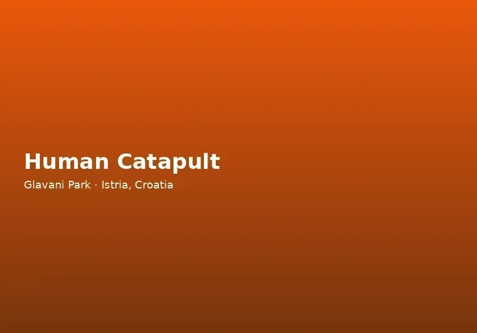

Why Celebrate a Birthday at an Adventure Park?
Children and teenagers remember experiences, not table decorations. A birthday at Glavani Park replaces passive entertainment with active adventure — harnesses, ziplines, rope bridges, and the shared excitement of trying something new together. Guests leave with stories and photos that outlast any disposable party bag, and parents appreciate that every activity is supervised by trained instructors in a controlled outdoor environment.
Located between Barban and Vodnjan, roughly 30 minutes from Pula, Glavani Park has become one of the most requested birthday party venues in Istria for families seeking something beyond indoor soft-play centres or beach picnics. The 1.5-hectare site offers enough variety to keep mixed-age groups engaged for a full morning or afternoon.
Birthday Party Packages at Glavani Park
Party packages typically include priority access to attractions, a reserved area for cake, gifts, and group photos, and coordination by staff who understand the flow of a celebration day. Optional add-ons may include catering, extended instructor time, or tailored route selection based on the birthday child's age and the group's confidence levels.
Younger birthday groups often focus on the 2-metre yellow high-ropes route, the climbing wall, and shorter queue times for the high swing under staff guidance. Teen celebrations frequently add the blue route with its 113-metre zipline, the standalone 120-metre line, and for the boldest guests, the Human Catapult or Quick Jump where age and height requirements are met.
Contact the park at +385 91 896 4525 to discuss package details, current pricing, and available dates. Advance booking is strongly recommended — especially for Saturdays during the school summer holidays when demand peaks.
Planning the Perfect Party Day
Most birthday groups spend three to four hours at the park: arrival and safety briefings, structured activity time on the courses and ziplines, then the celebration with cake in the shaded picnic area. Soft drinks and ice cream are available on site; many families bring their own birthday cake and snacks. Free parking simplifies drop-off for parents driving from Pula, Rovinj, or inland Istria accommodations.
The park is open daily from 9 AM to 5 PM with last entry at 3 PM. Morning slots (arriving 9:00–9:30) work well for younger children; afternoon arrivals suit teen groups who prefer a later start. Allow buffer time — parties rarely run to the minute when ziplines and group photos are involved.
Dress code: closed-toe sports shoes and comfortable clothes suitable for harness wear. Advise guests in advance so no one arrives in sandals. Sunscreen and water bottles are essential for summer celebrations.
Age Groups and Activity Selection
Glavani Park welcomes birthday celebrations for a wide age range. The yellow route at 2 metres suits primary-school children with adult helpers. Blue and black routes cater to older children and teenagers seeking greater height and challenge. Standalone attractions have specific minimum requirements that staff explain on arrival — the birthday child does not need to ride every element for the day to feel special.
Parents often join the activities, turning the party into a family adventure day. Alternatively, a core group of friends tackles the courses while adults relax in the picnic area with coffee from the on-site service. Either format works; the park's layout keeps spectators close to the action.
For very large groups, consider splitting into two time slots or combining with a visit to nearby Barban for lunch afterward. Our team can suggest itineraries that balance adrenaline with downtime.
Book Your Istria Birthday Party
Glavani Park combines the thrill of Croatia's best adventure attractions with the practical needs of a celebration — space, shade, parking, and professional supervision. Read about family activities, safety standards, and getting here from Pula, then call +385 91 896 4525 to reserve your date.
Give your child a birthday they will remember every time they pass a forest canopy — and give yourself the peace of mind that comes with CE-certified equipment, daily inspections, and an English-speaking instructor team trusted by thousands of Istria visitors each season.